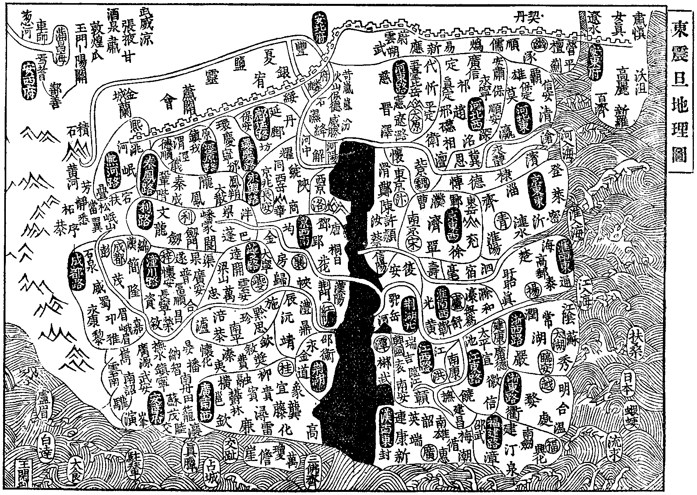
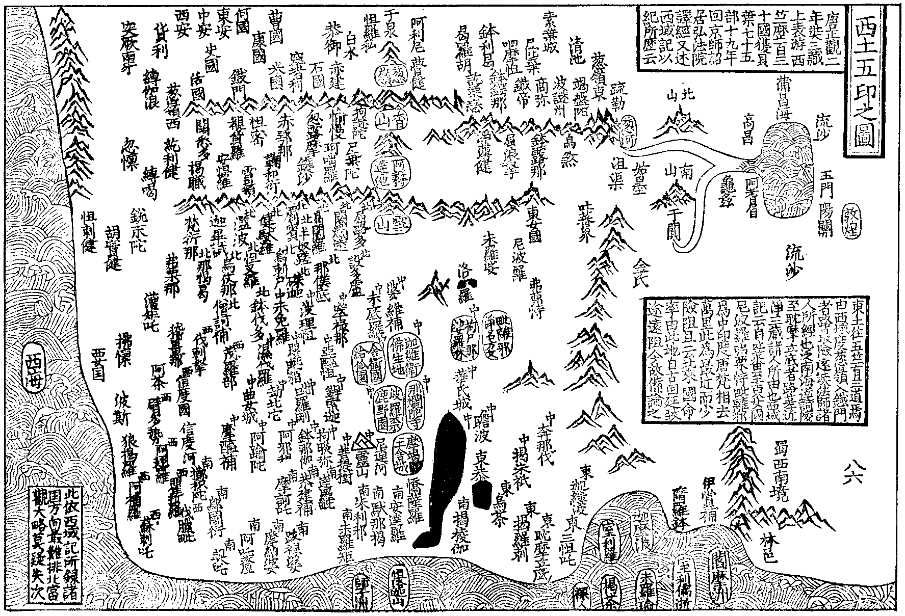

佛祖統紀卷第三十二
世界名體志第十五之二
東土震旦地里圖
區域之興帝嚳九州(冀兗青徐揚荊豫梁雍)舜十二州(以冀州土闊增置并幽營三州)夏禹平水土分別九州。周大封建。蓋千八百國。春秋之世見於經傳者。百二十有四國。下至戰國七雄并而為秦。懲周封建之弊罷侯置守。分天下為三十六郡。及南平百越。又置閩中南海桂林象四郡。兩漢以十三州統治(漢武帝置十三部刺史)晉為十九州。唐為十道。後又為十五。採訪使凡郡府三百二十有八。縣千五百七十有三。宋朝元豐頒行。李德芻等所撰九域志。分為二十三路(見於圖)郡凡二百九十有五。縣千一百三十有一。化外羈縻之州不與焉。
漢盛時。四履之地。東樂浪。西敦煌。南日南。北雁門。東西九千里。南北萬三千里。
古長城。戰國時趙築之。自代並陰山至高闕(二州名)以備胡。燕亦築媯州之北至遼東。秦始皇令蒙恬築長城。起臨洮入高麗。
四瀆。河出積石。江出岷山(松州嘉誠縣)淮出桐柏(唐州)濟出王屋山(孟州今河陽府)。
三江。自豫章而下入彭蠡。而東至海為南江。自蜀岷山至九江彭蠡。以入海為中江。自幡塚導漾東流為漢過三澨。大別以入於江匯於彭蠡。以入海為北江。自彭蠡以上為二。自夏口以上為三。下而至於秣陵京口以入海。則不複三矣。
九河。鬲津徒駭。在今瀛州鉤槃。太史胡蘇。在今滄州馬頰在今濟州。覆釜簡潔漫不可考。當在東光成平鬲縣之間。以漢許商之言考之。徒駭最北。鬲津最南。蓋徒駭是河之本道。東出分為八。齊小白塞之為一。今河間弓高以東。平原鬲津往往有其遺處。蓋塞其八枝。并歸於徒駭也(九域志)。
五岳。中岳嵩山。在洛州(西京)東岳泰山。在兗州。南岳衡山。在潭州。西岳華山。在華州。北岳常山。在真定府。
東夷。初周武王封箕子於朝鮮。漢滅之置玄菟郡○夫餘國。在玄菟北千里。本濊地○高句麗。其始王朱蒙。出自夫餘居升骨城。號高句麗。因以高為氏。在遼東千里。南接朝鮮濊貊。東接沃沮。北接夫餘。人皆隨山而居○三韓者。一馬韓。在西五十四國。北接樂浪。南接倭國。二辰韓。在東十二國。北接濊貊。亦曰秦韓。言秦人避役適韓國。三辨韓。在辰韓之南十二國。南接倭。馬韓最大。盡王三韓之地。○新羅辰韓種也。在高麗東南居漢樂浪。地多山險。文字甲兵同於中國。○百濟。馬韓之屬國。於帶方故地。初以百家濟故名。東接新羅。句麗。西南俱限大海。有僧尼寺塔。愛墳史頗解屬文○挹婁。古肅慎國。在夫餘東北千餘里。其北不知所極。人多勇力。矢用楛(音戶)青石為鏃。土氣極寒常穴居○遼東郡。大遼水出塞外南入海。行千二百里。遼西令支縣有孤竹城。故伯夷國○倭國。在百濟新羅東南。水陸三千里。依山島而居。漢魏譯通中國者三十餘國。皆稱王。大倭王居邪摩堆。其地在會稽東。俗皆文身。自云太伯之後。自倭國東千里名拘奴國。南四千里名朱儒國。人長三四尺。自朱儒東南行船一年。至裸國黑齒國。倭國始於百濟求得佛經。隋大業十三年遣使朝貢。兼沙門數十人來學佛法○流求國居海島。當建安郡東。水行五日而至。煬帝遣陳稜至其國。虜男女載軍實而還○蝦蛦。唐太宗時倭國遣使。偕蝦蛦人來朝。高宗平高麗。倭國遣使來賀。始改日本。言其國在東近日所出也○扶桑國。在東海中。齊永元初。僧慧深來建康。言其國在大漢東三萬里。宋大明五年罽賓國沙門。至其國傳佛法。
北狄。周有山戎玁狁。秦漢有匈奴。桓靈時有鮮卑。後魏蠕蠕(音軟)西魏突厥。唐回紇。皆匈奴故地。唐契丹居松漠間。至宋朝益盛稱大遼。後有女真稱大金。韃靼稱蒙古○西羌。三代為患。至秦漢逐之河塞之外。漢宣帝時趙充國。破先零(音憐)置金城。屬國以處降羌。東漢屢為患。段熲擊破之。魏晉多亂關隴。永嘉後有谷渾。唐初吐蕃并吐谷渾黨項諸羌。遂為強國○海南諸國。扶南。丹丹。交趾。真臘。故臨。大食。白達。大秦。盧眉。勿斯里(島夷雜記)宋朝來貢者。占城。三佛齊。勃尼。闍婆。注輦。丹流眉蒲端。
煬帝時。西域諸蕃多至張掖。與中國交市。帝令裴矩掌其事。撰西域圖記云。發自敦煌至於西海凡為三道北道從伊吾經蒲類海。鐵勒部。突厥。可汗(音克寒北虜主之號)庭。度北流河水。至拂菻國。達於西海。其中道。從高昌。焉耆。龜茲。疏勒。度葱嶺。鏺汗。蘇勒沙那。康國。曹國。何國。大小安國。穆國。至波斯。達於西海。其南道。從鄯善。于闐。朱俱波。喝盤陀。度葱嶺。經護密。吐火羅。挹[怡-台+(日/工)]。帆延。漕國。至北婆羅門。達於西海。其三道諸國
亦各有路。南北交通。故知伊吾。高昌。鄯善。並西域之門戶。總湊敦煌(云云)。帝由是甘心將通西域。令矩往張掖引致西蕃四十餘國(隋書裴矩傳)。
高昌。即車師前王庭(交河是也)有貪污山。夏有積雪。山北即鐵勒界也。目敦煌向其國多沙磧(七亦切)茫然無蹊徑。欲往者尋人畜骸骨而去。或聞歌哭聲。蓋魑魅所為也。商旅往來多取伊吾路(北史西域傳)。
述曰。談天地之極際者。無若佛經。其言須彌四洲。猶太倉一粟耳。至如閻浮提者。則又四洲之南境。經言。縱廣七千由旬。周圍之可得二十八萬里。以一由旬四十里。計之也。從遼東西行。出陽關踰葱嶺。經五竺盡西海際。從南海北行出雁門。踰沙漠極。北至瀚海。縱橫皆可九萬里。而世人乏通識見。漢時四履之盛不出萬里。以故乍聞此說莫之能信。須知此方居東。天竺居中。自此方西至天竺。為四萬五千里。自天竺西向盡西海。亦四萬五千里。如此則此地為閻浮之東方。信矣。世儒謂之中國。且據此地。自論四方之中耳。儒家談地止及萬里。則不知五竺之殷盛西海之有截也。道家談天止及三境。則不知六欲四禪四空之高遠無色之無極也。況欲知萬億須彌三千大千之天地耶。況欲知華藏世界周遍建立如帝網耶。是則談天地之極際者。非憑佛經。不足以盡其致也。
贍部洲中心名阿耨達池。在香山南大雪山北。周八百里。十地菩薩化為龍王。於中潛宅。出清冷水以給贍部。池之東面。銀牛口流出殑伽河。遶池一匝。入東南海。池之南面。金象口流出信度河。遶池一匝。入西南海。池之西面琉璃馬口流出縛芻河。遶池一匝。入西北海。池之北面。頗胝師子口流出徙多河。遶池一匝。入東北海。或曰。潛流地下出積石山為東華河源云(贍部解見前四洲九山圖。阿耨達此云無熱惱。其池四寶嚴飾。從四獸口流出其水。殑伽此云天堂來。言來處高也。信度此云驗河。縛芻此云青河。徙多此云吟河贍部一名閻浮提)自高昌近者。曰阿耆尼國(有伽藍十數漢書曰焉耆)西南九百里曰屈支(伽藍百所。屈居勿反。舊曰龜茲。音丘慈)西南六百里曰跋錄迦(舊曰姑墨)西北六百里至凌山。葱嶺之北原行四百里至清池。北行五百里素葉水城。西四百里千泉。南面雪山。三垂平陸。突厥來此避暑。西至呾羅私。西南白水。西南恭御城。南笯赤建。西石國西窣堵利。西北康國。南至米國。北至曹國。西至何國。西東安。西中安。西至西安。西南貨利○自康國西南至史國。東南入鐵門。南出至覩貨羅(即前引隋書吐火羅)東扼葱嶺。西接波剌斯。南面雪山。北據鐵門○順縛芻河北流至怛密東。至赤鄂衍。又東至忽路摩。又東至愉漫。西南臨河至鞠和衍。又東至鑊沙。又東至珂咄羅。東接葱嶺至拘謎陀。南至尸棄陀。渡河至達摩帝○自活國東南至闊悉多。西至縛伽浪。南至紇利健。西南忽懍。東至縛喝。北臨河。伽藍百所。人謂之小王舍
城。從此西南入雪山阿至銳末陀。西南至。從縛喝南至揭職。東南入大雪山至梵衍那(有臥佛千尺。商那和修胎生九條衣尚存)東踰黑嶺至迦畢試(北面雪山伽藍百所)東入北印度境至濫波。東至健馱羅(大塔高五百尺。元魏胡太后遣使持大幡五百尺。往挂之。脚纔及地)南至那揭曷(北印度境)北至烏仗那(釋種被斥王此云昔輪王之苑。僧常萬人)東至鉢路羅(大雪山中)南度信度河至怛叉羅。東南至僧訶補。東南至烏剌尸。東南至迦濕彌羅(舊曰罽賓伽藍百所)東南至曷闍羅。南至磔迦。東至那僕底。東北至闍爛達。東北至屈路多。北至洛護羅。又北至末羅娑○自屈路多南至設多盧(已上並北印度)西南至波理怛(自此為中印境)東至末兔羅(毱多度人石室盈籌之處)東北至濕伐羅。東北至窣祿那(東臨殑伽河)東度河至末底羅。北至婆羅補(此係北印)北雪山中有金氏國(女為王。夫亦為王不知政事。此國東接吐蕃。北接于闐。西接末羅婆)○自末底羅東至瞿毘霜。東南至醯呾(佛為文鱗龍王。七日說法處)南度殑伽河至毘羅剛。東南至劫比他(佛在忉利天為母說法。帝釋奉三道寶階之處)西北至曲女城。東南度殑伽河至阿踰陀東至阿那穆。東南至鉢羅那。西南至拘睒彌北至鞞索迦。東北至舍衛國(城南五里給孤獨園)東南至迦毘羅衛(佛生處。淨飯王殿。摩耶夫人殿。菩薩降胎處。並建精舍。佛還本生國。時止尼俱盧伽藍。受姨母金縷袈裟。度八王子五百釋種)東北至拘尸那(娑羅林佛滅處)西南至波羅柰(鹿苑轉法輪處。近鹿苑有支那寺。國王為大唐僧眾所造。支那此云大唐)○順殑伽河東北至毘耶離(舊名毘舍離有維摩方丈)東北至弗栗恃(北印境)西北至尼波羅(其國北境即東女國。與吐蕃接。人來國命往還。率由此地。唐梵相去萬里。自古取道迂迴致成遠阻)○自毘耶離南度殑伽河至摩竭提(又名摩伽陀。中印境。王舍城在此國中。華氏城在河南岸。西南度尼連禪河。即伽耶城。城西六里。至伽耶山。俗呼靈山。西南菩提樹。佛成道處。樹高五丈。周垣五百步。中有金剛座。千佛坐之入金剛定。鷄園伽藍。無憂王建。常供千僧。那爛陀寺。五王共造。僧徒數千。並俊才高學)東至瞻波。東至揭朱祇。東度殑伽河至奔那伐(已上並中印度)東至迦摩縷(其國已歷千世。至今不信佛法。國之東境山阜連接。可兩月行入蜀西南境)南至三摩怛(東印)東北大海濱至室利羅。東南大海隅至迦摩浪。東至墮羅鉢。又東至伊賞補。又東至摩訶瞻波(即此方林邑)又西南至閻摩那(此六國道阻不及往)○自三摩呾西至耽摩立底(東境濱海界溫)西北至揭羅剌。西南至烏荼(東南臨大海有城海商中止之地。南去師子國二萬里。靜夜望其國。佛牙塔寶珠光。猶如大炬)西南至恭御陀(已上東印。臨海濱。不信佛法)西南至揭稜伽(南印)西北至憍薩羅(中印國王名引正。為龍猛建伽藍。招集千僧。計工人所食鹽價。用九億金錢)南至案達羅(此下南印)南至馱那揭。西南至朱利耶南至達羅毘。南至末羅矩(南境濱海。有末刺耶山。此山之東有布呾洛迦山。山頂有池。池側有石天宮。觀自在菩薩遊舍於此。有願見者厲水登山)東南至執師子國(此非印度境。有佛牙精舍。上建表柱。置大寶珠若明星王宮側建大厨。日營萬八千僧食。食時持鉢來受。各還其居。自有佛教。便興此供)○自達羅毘北至恭建補(南印境有多羅樹林。其葉長廣。諸國書寫莫不采用)西北至摩訶剌。西至跋祿婆(業海煮鹽)西北至摩臘婆(五印之境。有兩國重學。西南摩臘婆。東北摩竭陀。名僧極盛。此國南至海)西北至阿吒釐○自摩臘婆西北至契吒。北至伐臘毘(已上南印)西北至補羅(自此西印)○自伐臘毘北至瞿折羅(西印)東南鄔闍衍(南印)東北至擲枳陀(南印)北至摩醯補(中印)○自瞿折羅北度信度河至信度國(西印)東度河東岸至茂羅部(西印)東北至鉢伐多(北印)○自信度國西南至阿默翅(西印隣大海)西至狼揭羅(西印大海濱)西北至波斯(北印度境)西北至怫懍(隋史拂菻)西南至海島西女國(皆女人。拂懍歲遣丈夫。偶得男不舉)○自阿默翅北至臂多勢(西印) 東北至阿荼(西印)東北至伐剌拏(西印屬迦畢試)西至稽畺那。西北出印度境至漕矩吒。北至弗栗那。東北至大雪山犀那大嶺。贍部之中斯嶺特高。下嶺至安呾羅(屬突厥)西北至闊悉多(屬突厥)西北至活國(屬突厥主管鐵門已南諸小國)從此東入葱嶺。此嶺當贍部中。南接大雪山。北至熱海千泉西至活國。東至烏殺國。四方各數千里。崖嶺數百重。永雪風寒山阜葱翠。故此為名。東至瞢健(屬突厥)北至阿利尼。東至曷羅胡○從瞢健東至訖栗瑟。東北至鉢利曷。從訖栗瑟東至呬摩呾。西至鉢鍔那。東南至淫薄健。東南至屈浪拏。東北至鐵帝北至尸棄陀越鐵帝大山。南至商彌。東北至波謎川(東西千里)南至鉢露羅。自川登山至竭盤陀。下葱嶺東岡至烏殺。西北至佉沙(舊名疏勒)東南至沮渠(經典極盛)東至于闐。東入沙碩至尼壤城。為東境之關。又東入大流沙。其沙隨風聚散。人多迷路。往來聚遺骸以記。東至且末。東北至樓蘭故地(即鄯善國)○印度者。天竺之正名(此云月)北背雪山。三垂大海。地形南狹如月上弦。川平地廣。周九萬里。七千餘城依止其中盡三海際同一王命(唐玄奘三藏西域記)。
光明經。八萬四千城邑聚落。仁王經。十六大國五百中國十萬小國。楞嚴經。此閻浮提大國二千三百。
樓炭經。葱河以東名為震旦。唐彥琮法師云。葱嶺已西。並屬梵種。鐵門之左皆曰胡鄉(有指五竺為胡國。梵典為胡經。梵僧為胡僧。此類皆大誤)唐義淨三藏。於咸亨二年自番禺附舶(普潘愚今廣州)西至訶陵。次室利佛逝。次末羅瑜。次揭荼。北行十日至裸人(在蜀西南男女皆裸形)西北半行至耽摩立底(東印境海口升舶歸唐處)正西至莫訶菩提國(即摩竭提)那爛陀寺有七十驛(又云耽摩去莫訶有十日)那爛陀禮根本塔。耆闍崛山觀疊衣處。大覺寺禮真像(即菩提道場金剛座處)。
拘尸方丈。鹿園雞嶺。遍禮聖迹。住那爛陀十年。求經還耽摩立底。升舶過揭荼。將梵本寄佛逝。作南海寄歸傳求法高僧傳。永昌元年秋回廣府。至冬復附舶至佛逝。住三載。證聖元年回洛京譯經。
述曰。贍部一洲在西為五印度。飛行輪王之所治。是為梵天之種。東則震旦。皇王周孔之所化。是為君子之國。北為狄種。獫狁匈奴胡人之鄉。封域分殊。不為指梵為胡以自混濫。如舊稱胡跪胡經胡漢老胡。皆無稽之言不足用也。諸經言國城數不定者。古今離合不同也。如此方周千八百國。春秋七十餘國。秦七國。魏三國。晉十六國。或離或合。為國不一。要不出此一境也。又諸經華梵不同者。羅什洹河。奘師殑伽。什云須彌。奘云蘇迷盧。並指什譯為訛。此說未可為定。蓋由求法沙門所問土音中邊不同古今有異。而詮其實則一也。如此方南北音轉名處名物其語各殊。又如此方同一震旦而周秦漢晉為號不同。豈當定是非於古今之際。能識此意。則華梵不同。自可心會也。
新婆沙論。南洲下至無間。共四萬由旬。上尖下闊猶如穀聚○薩婆多論。南洲下土泥五百由旬。白墡五百由旬。等活至極熱七獄。共高一萬九千由旬。各廣萬由旬。無間高廣二萬由旬。阿毘曇論。等活壽五百歲。黑繩千歲。眾合二千歲。號叫四千歲。大叫八千歲。炎熱一萬六千歲。極熱半劫。無間一劫。俱舍論。等活一晝夜當四天王五百歲。次第至炎熱一晝夜當他化一萬六千歲(餘獄次第對例)成實論。五無間者。一趣果無間。捨身即生彼故。二苦無間。中無樂故。三時無間。定一劫故。四命無間。中不絕故。五形無間。此獄縱廣八萬由旬。一人亦滿。多人亦滿(多論二萬由旬)。
八熱地獄圖
新婆沙論。八熱獄。一一獄有四門。一一門外有四遊增。有情遊彼其苦增故。地獄有情其形如人。正法念經。阿鼻苦千倍過前七大地獄。
| 八寒地獄圖 |
| 一頞浮陀 二尼賴陀三阿吒吒 四阿波波五嘔喉 六欝波羅七波頭摩 八分陀利 |
此八獄在鐵圍山底。仰向居止受寒凍苦(三法度經)頞浮陀壽。如憍薩羅國斛量。胡麻滿二十斛。有一丈夫滿百年取一胡麻。如是取盡。復以二十頞浮陀壽。為一泥賴陀壽。餘次第準此(起世因本經)泥犁耶此名非道。欲界最下劣故(阿毘曇論)捺落迦此云惡人(新婆沙論)人所作善惡。隨人如形影隨身。人死但亡其身不亡其行。譬如然火夜書火滅字存火至復成。今世作行後世成之(那先比丘所問經)。
地獄有三。一熱。二寒。三邊。一熱地獄者有八。一名等活。罪人手生鐵爪相摑肉墮。或獄卒唱生。或冷風吹活。兩緣雖異令活一等。人受苦已復至黑沙獄乃至沸屎獄。次第至寒氷獄。然後命終。由身口意造不善業墮此獄中。一一大獄各有十六小獄。周匝圍遶(即婆沙論十六遊增)二名黑繩。以熱鐵繩絣量肢體後方斬鋸。久受苦已至黑沙獄乃至寒氷獄。然後命終。準前受苦加重。由惡意向父母及聲聞墮此獄中。三名眾合。眾多苦具熾然猛熱合來逼惱(餘義準前作)由造三惡業墮此獄中。四名叫喚。獄卒捉人擲鐵鑊中。涌沸叫喚。由瞋恚懷毒墮此獄中。五名大叫喚。置鐵鑊中號咷大叫。由習邪見惡行墮此獄中。六名炎熱。置鐵城中火然焦爛。由燒炙眾生墮此獄中。八名無間(梵語阿鼻或作阿毘)獄卒捉彼罪人剝皮纏身著火車上。萬毒並至無不苦時。為極重罪墮此獄中(十惡五逆也。已上參用長阿含經文)此八地獄在閻浮洲下。重累而住受熱惱苦。前二有主治。次三少主治。後三無主治。二寒地獄者有八。一名頞浮陀。寒苦所切肉生細泡。二名尼賴浮陀。寒風所吹通身成泡。此二從身相受名。三名阿吒吒。脣動不得舌作此聲。四名阿波波。舌不得動脣作此聲。五名嘔喉。喉內振氣作聲。此三從聲相受名。六名欝波羅。此是青蓮華。肉色細拆似此華。七名波頭摩。此是赤蓮華。肉色大拆似此華開。八名分陀利。此是白蓮華。由彼骨拆似此華開。此三從瘡相受名。此八獄在鐵圍山底。仰向居止受寒凍苦。三邊地獄者有三。山間水間曠野。受別業報。此應寒熱雜受(三法度經鍑方宥切大釜)。
閻浮洲南。二鐵圍山外有閻摩羅王宮殿。縱廣正等六千由旬。七重欄楯七重行樹。園苑花池種種美果。香風遠薰眾鳥和鳴。王以惡業。晝夜六時自然有赤融銅汁。在前出生。宮殿即變為鐵。獄卒取王撲熱鐵地。以銅汁寫置口中。時王怖畏作念願我捨身於人間。受生如來法中正信出家。發是善念。宮殿還成七寶。五欲具足(起世經)。
閻羅王昔為毘沙國王。與維陀始生王戰兵力不敵。因立誓願為地獄主。臣佐十八人領百萬眾。同立誓曰。後當奉助治此罪人。毘沙王者今閻羅王是。十八臣者今諸小王是。百萬眾者諸阿旁是(問地獄經阿旁此云無間)琰摩羅此言雙王。兄主男獄。妹主女獄(正法念經)兄妹皆作獄主。故云雙王。又苦樂並受故(經音義)。
阿鼻地獄。縱廣八千由旬。七重鐵城。七重鐵網。有十八鬲子(郎的切鼎屬)周匝七重。皆是刀林。四大銅狗。十八獄卒。八頭六十四角。六十四眼。有七鐵幢火涌如沸。若有罪逆。命終之時銅狗化十八車狀如寶蓋。一切火焰化為玉女。罪人遙見心喜欲往。風刀解體寒急作聲。寧得好火。安在車上。即便火然。罪人命終來生火車。屈申臂頃直入阿鼻。從上鬲下如旋火輪至於下鬲。化閻羅王大聲告勅。癡人獄種。汝在世時不孝父母邪見無道。汝今生處名阿鼻獄。如是大苦一日一夜。如人間六十小劫。如是壽命盡一大劫。具五逆者受罪五劫。復有眾生。犯四重禁虛食信施。誹謗邪見不識因果。斷學般若毀十方佛。偷僧祇物婬逸無道。此人罪報經八萬四千大劫。復入東方十八鬲子。如前受苦。南西北方亦復如是。阿鼻即無救也(觀佛三昧正海經○鼻音毘。智炬經。阿毘地獄應時破壞。當知毘音無疑。楞嚴經。既言阿鼻。又出無間。今阿鼻自云無救。當知阿鼻大獄在無間之外)。
佛祖統紀卷第三十二(終)
孝武時始通西域。三十六國。皆在匈奴之西烏孫之南。西北有大山。中央有河。東西六千餘里。南北千餘里。東則接漢扼。以玉門陽關(二關皆在敦煌西界)西則限以葱嶺(其山葱翠又云多葱葱同)。其南山東出金城。與漢南山屬焉(音燭連也)。其河兩源一出葱嶺。一出于闐(音田)于闐在南山下。其河北流與葱嶺河合。東注蒲昌海(一名鹽澤)。去玉門陽關三百里。廣袤三百里。其水冬夏不增減。皆以為潛行地下。南出積石。為中國河源云。自玉門陽關出西域有兩道。一從鄯善旁南山北循河西行至莎車為南道。南道西踰葱嶺則出大月氏．安息。自車師前王廷隨北山循河西行至疏勒為北道。北道西踰葱嶺則出大宛．康居．奄蔡。西域諸國有城郭田畜。與匈奴烏孫異俗。皆役屬於匈奴。匈奴西邊日逐王置都尉領西域。後驃騎將軍擊破匈奴古地降昆邪休屠王(驃頻妙反。昆音渾。屠音儲。匈奴二王)始築令居以西(令音鈴)初置酒泉郡(有水味甘)。後稍分置武威．張掖．敦煌(敦音屯)。列四郡據兩關。自貳師將軍(李廣利)伐大宛得天馬。西域震懼。多遣使來貢。宣帝朝日逐玉來降。乃令使者鄭吉并護北道號都護治烏壘城。去陽關二千七百里。於西域為中(西漢書西域書)。
明帝永平中。班超使西域到鄯善斬匈奴使者。鄯善王怖納子為質。後發諸國兵擊莎車斬疏勒王。擊破月氏副王。降龜茲．姑墨．溫宿。斬焉耆尉犁二王。威震西域。五十餘國皆納質內屬(東漢班超傳)。